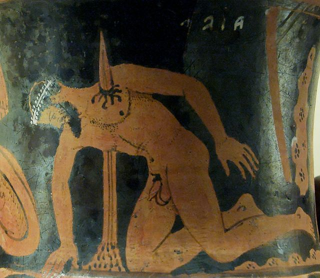

Introduction
The play 'Ajax' (or Aias) was created by the iconic Ancient Greek playwright Sophocles. The artist made over 120 plays in his lifetime. His plays' topics were closely related to myth and could typically be regarded as 'tragedies'.
The play 'Ajax' revolves around the suicide of the Greek warrior Ajax who had lost his pride - not by means of battle, but through the cunning wit of another man. As we shall realize in this abbreviated version of the play, Ajax was an earnest fighter who, when given the chance, was betrayed by the other Greek kings who were with him in Troy, when the Greeks fought the rich city over the abduction of queen Helen of Sparta.
Abridged version of the play Ajax
Odysseus walks outside amidst the tents of the Greeks when he suddenly hears the voice of Athena. While remaining incorporeal, Athena proclaims her guardianship over Odysseus. She appreciates Odysseus’ steadfast humility and gracefulness over the years. He has always given his thanks to Athena when such praise was due and never embodied ‘hubris’ when he was victorious.
Athena pronounces that she has been observing Odysseus for quite some time now. She wonders what he has shown such eagerness for, and why he is now wondering around within the camp of the Greeks.
Odysseus explains that he noticed how the herd of sheep and other cattle had been rampaged by an unknown entity. This herd was a spoil of war after the Greeks had successfully sacked the city of Troy, not so long ago. In Odysseus’ hunt for the perpetrator, he is tracking the man he suspects most of doing it, Ajax, the shield-bearer.
There is a reason why Odysseus suspects Ajax:
After the death of Achilles, Odysseus and Ajax fought over the inheritance of the fallen hero’s armour. This armour stood symbol for the greatest / most valuable warrior of the Greek army. Odysseus recently won this challenge because of his superior arguments and orations. Ajax’ pleas did not weigh up to those of the smart king of Ithaca even though Ajax’ merit in battle far outweighed that of Odysseus. In the play, Odysseus seems to expect that this anger, and Ajax’ resentment towards Odysseus have something to do with the slaughter of the herd.
Athena affirms that Odysseus correctly suspects Ajax of the herd-slaughter. She explains how she noticed Ajax’ rage over the arms of Achilles. She accordingly read his mind and saw that he sought revenge, not only to Odysseus, the king of Ithaca, but to áll kings of the Greek army. He set out to slaughter them by his mere self and, in so doing, regaining his pride and title as the greatest warrior of the Greek army*.
*Throughout the Iliad and Ancient Greek myths in general, pride is a central driving force behind characters’ action. Pride is everything to a figure like Ajax – and its loss almost inevitably leads to retaliation.
Ajax had been right outside the tent of Agamemnon and Menelaus (primary leaders of the Greek army) when she took control over Ajax’ mind and made him kill the herd and its guardians. While slaughtering every animal in sight, Ajax was under the illusion that he was in a massive one-versus-all battle against the other Greek kings and their men.
Athena points to the tent of Ajax and says that he has taken several sheep inside to torture and mutilate them, thinking that they were Agamemnon, Menelaus and Odysseus. Athena tells Odysseus that he should not be afraid when she summons Ajax out of the tent as she still controls the shield-bearer’s sight and mind. When called upon, Ajax comes out of the tent, with blood-shot eyes and a blood stained whip in his hand.
The chorus, who represent the mates of the ship of Ajax (his personal soldiers) are shocked at what they see. They talk to Ajax’ wife Tecmessa, who is appaled by the bloody scene within tent.
When Athena finally let go of her mind-control over Ajax, the formidable Greek warrior realizes what he has done. He starts wailing and fearing the repercussions that he will now be facing – he fears that no Greek soldier other than his personal shipmates is loyal to him. In other words, after failing his last attempt to regain his pride, Ajax estimates that he has reached a point of no return.
Ajax shoos off his wife’s nervosity and asks her to bring him his son, so that he may speak to him in these dire times.
After having spoken to his son, wife and shipmates, Ajax leaves the tent to settle his affairs. His final words were as follows: “I am going to where my journey inexorably leads. But you do as I say, and before long, perhaps, though I now suffer, you will hear that I have found rest and peace.”
Besides his shipmates, Ajax had a half-brother named Teucer. He was much smaller than the giant Ajax, but Teucer’s agility filled the gaps that Ajax left in his defense. In short, he was his brother in arms on the battlefield; always there by Ajax’ side and of the same bloodline.
Teucer was not present in the tent-scene and was, at that moment, far out from the Greek’s camp. He had witnessed a prophecy of the Greek seer Calchas. The seer remarked that it was of great importance that Ajax would not leave his tent until morning came. Upon hearing this, Calchas immediately sent a messenger to Ajax tent and bring him this news. But, halas, when the messenger arrived, Ajax had already left the party of his loved ones behind.
The messenger also conveyed that Ajax had culpably fallen out of favor with the gods. He should have been more humble – like Odysseus was to Athena.
When Ajax’ wife and his shipmates heard from the messenger they expressed their fears about what was going to happen and became nervous about Ajax’ absence. Their fear proves to be correct, as the scene of the play changes to a desolate area, where Ajax is with his sword in hand and saying his final words. Ajax dug the sword into the ground and fell upon it.

Tecmessa, now widow of Ajax, learns of Ajax’ suicide and fears a horrid future for her and her son. In the play, one of her lines reminds us of the popular proverb “Be careful what you wish for”: She says “Men of crooked judgment do not know what good they have in their hands until they have thrown it away” (lines 965-6).
Menelaus joins the party of Tecmessa, Teucer and Ajax’ shipmates. He disapproves of Ajax and his disobedience. He also pleads for a death without burial – a great disrespect to a king and warrior of great past merit in the Greek army. Menelaus finds that Ajax should become “forage for the birds of the seashore”.
Then Agamemnon, supreme leader of the Greek army, debates Teucer over Ajax’ burial. At last, he wishes to stop speaking to Teucer, and he says:
Teucer is surprised by this lack of respect: Agamemnon would not dare speak to Teucer not very long ago, when the war against Troy was still raging and Ajax was still alive and whose gravitas kept Agamenon in check.
Ajax’ shipmates talk to Odysseus, who was on good terms with Ajax before he became a great enemy over the arms of Achilles. They plea that Odysseus should talk to Agamenon and demand a proper burial.
The humble Odysseus indeed debates with Agamemnon over the arms of Achilles. With his superior debating skill, Odysseus outwits Agamemnon and secures a proper burial for Ajax (enabling his passage to the underworld)
Ajax’ friends and family rush to prepare his grave, digging a hole and grabbing prime belongings from Ajax’ tent. But it is in this rush that the play ends. The chorus, who had represented Ajax’ shipmates proclaims the final sentence of the play: